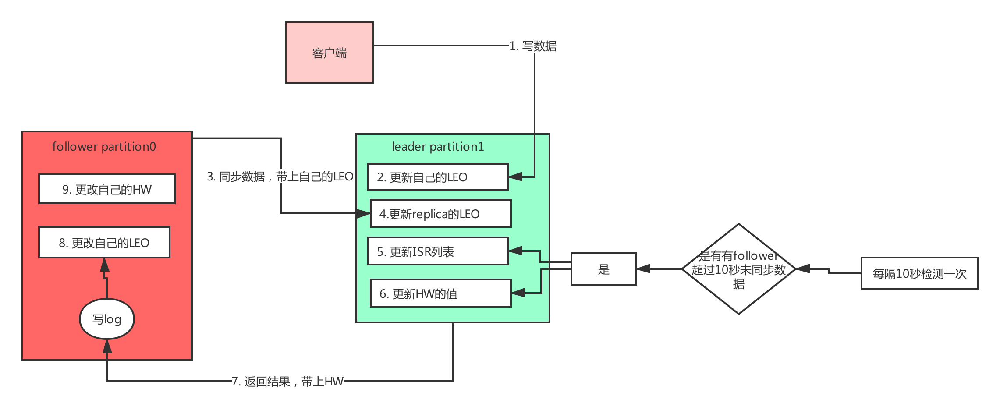

1. Java基础篇
- 语言基础
- 锁
- 多线程
- 并发包中常用的并发容器（JUC）
1.1 语言基础
Java面向对象
Java语言的三大特性： 封装、继承、多态
Java语言的数据类型
内置数据类型：
1
2// 1. 在被创建时，在栈上给其划分一块内存，将数值直接存储在栈上。
int byte short float double char boolean引用数据类型
1
2// 2. 在被创建时，首先要在栈上给其引用（句柄）分配一块内存，而对象的具体信息都存储在堆内存上，然后由栈上面的引用指向堆中对象的地址。
class interface array enum @interface
Java的自动类型转换，强制类型转换
String的不可变性、虚拟机的常量池、String.intern() 的底层原理
String.intern():
1
2
3
4
5
6
7
8
9
10
11
12
13
14
15// String.intern();
// return 一个字符串，内容与此字符串相同，但一定取自具有唯一字符串的池。
String a = "a";
String b = "b";
String ab = "ab";
String ab0 = "a" + "b";
String ab1 = a + b;
String ab2 = new String("ab");
String ab3 = new String("a") + new String("b");
// 以下结果为。true
System.out.println(ab == ab0);
System.out.println(ab == ab1.intern());
System.out.println(ab == ab2.intern());
System.out.println(ab == ab3.intern());
System.out.println(ab2.intern() == ab3.intern());
Java 语言中的关键字：final、static、transient、instanceof、volatile、synchronized的底层原理
Java 中常用的集合类的实现原理： ArrayList/LinkedList/Vector、SynchronizedList/Vector、HashMap/HashTable/ConcurrentHashMap 互相的区别以及底层实现原理
动态代理的实现方式
- jdk动态代理：interface 、 InvocationHandler
- CGLIB： MethodInterceptor
1.2 锁
- CAS、乐观锁与悲观锁、数据库相关锁机制、分布式锁、偏向锁、轻量级锁、重量级锁、monitor
- 锁优化、锁消除、锁粗化、自旋锁、可重入锁、阻塞锁、死锁
- 死锁的原因
- 死锁的解决办法
- CountDownLatch、CyclicBarrier 和 Semaphore 三个类的使用和原理
1.3 多线程
- 并发和并行的区别 点
- 线程与进程的区别 点
- 线程的实现、线程的状态、优先级、线程调度、创建线程的多种方式、守护线程
- 自己设计线程池、submit() 和 execute()、线程池原理
- 为什么不允许使用 Executors 创建线程池 点
- 死锁、死锁如何排查、线程安全和内存模型的关系
- ThreadLocal 变量
- Executor 创建线程池的几种方式：
- newFixedThreadPool(int nThreads)
- newCachedThreadPool()
- newSingleThreadExecutor()
- newScheduledThreadPool(int corePoolSize)
- newSingleThreadExecutor()
- ThreadPoolExecutor 创建线程池、拒绝策略
- 线程池关闭的方式
1.4 并发容器（J.U.C）
- JUC 包中 List 接口的实现类：CopyOnWriteArrayList
- JUC 包中 Set 接口的实现类：CopyOnWriteArraySet、ConcurrentSkipListSet
- JUC 包中 Map 接口的实现类：ConcurrentHashMap、ConcurrentSkipListMap
- JUC包中Queue接口的实现类：ConcurrentLinkedQueue、ConcurrentLinkedDeque、ArrayBlockingQueue、LinkedBlockingQueue、LinkedBlockingDeque
2. Java进阶篇
2.1 JVM
JVM内存结构
1
class 文件格式、运行时数据区：堆、栈、方法区、直接内存、运行时常量池
堆和栈区别
1
Java 中的对象一定在堆上分配吗？
Java 内存模型
1
计算机内存模型、缓存一致性、MESI 协议、可见性、原子性、顺序性、happens-before、内存屏障、synchronized、volatile、final、锁
垃圾回收
1
GC 算法：标记清除、引用计数、复制、标记压缩、分代回收、增量式回收、GC 参数、对象存活的判定、垃圾收集器（CMS、G1、ZGC、Epsilon）
JVM 参数及调优
1
-Xmx、-Xmn、-Xms、Xss、-XX:SurvivorRatio、-XX:PermSize、-XX:MaxPermSize、-XX:MaxTenuringThreshold
Java 对象模型
1
oop-klass、对象头
HotSpot
1
即时编译器、编译优化
虚拟机性能监控与故障处理工具
1
jps、jstack、jmap、jstat、jconsole、 jinfo、 jhat、javap、btrace、TProfiler、Arthas
类加载机制
1
classLoader、类加载过程、双亲委派（破坏双亲委派）、模块化（jboss modules、osgi、jigsaw）
2.2 NIO
- 用户空间以及内核空间
- Linux 网络 I/O 模型：阻塞 I/O (Blocking I/O)、非阻塞 I/O (Non-Blocking I/O)、I/O 复用（I/O Multiplexing)、信号驱动的 I/O (Signal Driven I/O)、异步 I/O
- 灵拷贝（ZeroCopy）
- BIO 与 NIO 对比
- 缓冲区 Buffer
- 通道 Channel
- 反应堆
- 选择器
- AIO
2.3 RPC
- RPC 的原理编程模型
- 常用的 RPC 框架：Thrift、Dubbo、SpringCloud
- RPC 的应用场景和与消息队列的差别
- RPC 核心技术点：服务暴露、远程代理对象、通信、序列化
3. Linux 基础
- 了解 Linux 的常用命令
- 远程登录
- 上传下载
- 系统目录
- 文件和目录操作
- Linux 下的权限体系
- 压缩和打包
- 用户和组
- Shell 脚本的编写
- 管道操作
4.分布式理论篇
- 分布式中的一些基本概念：集群（Cluster）、负载均衡（Load Balancer）等
- 分布式系统理论基础： 一致性、2PC 和 3PC
- 分布式系统理论基础：CAP
- 分布式系统理论基础：时间、时钟和事件顺序
- 分布式系统理论进阶：Paxos
- 分布式系统理论进阶：Raft、Zab
- 分布式系统理论进阶：选举、多数派和租约
- 分布式锁的解决方案
- 分布式事务的解决方案
- 分布式 ID 生成器解决方案
5. Netty
Netty 三层网络架构：Reactor 通信调度层、职责链 PipeLine、业务逻辑处理层
1
2
3
4
51. Reactor通信调度层: 该层的主要职责就是监听网络的连接和读写操作，负责将网络层的数据读取到内存缓冲区中，然后触发各种网络事件，例如连接创建、连接激活、读事件、写事件等，将这些事件触发到Pipeline中，再由Pipeline充当的职责链来进行后续的处理
2. 职责链Pipeline层。负责事件在职责链中有序的向前（后）传播，同时负责动态的编排职责链。Pipeline可以选择监听和处理自己关心的事件
3. 业务逻辑处理层，一般可分为两类：
a. 纯粹的业务逻辑处理，例如日志、订单处理。
b. 应用层协议管理，例如HTTP(S)协议、FTP协议等。
Netty 的线程调度模型
序列化方式
链路有效性检测
流量整形
优雅停机策略
Netty 对 SSL/TLS 的支持
Netty 的源码质量极高，推荐对部分的核心代码进行阅读：
Netty 的 Buffer
Netty 的 Reactor
Netty 的 Pipeline
Netty 的 Handler 综述
Netty 的 ChannelHandler
Netty 的 LoggingHandler
Netty 的 TimeoutHandler
Netty 的 CodecHandler
Netty 的 MessageToByteEncoder
6. Hadoop
6.1 MapReduce
- 掌握 MapReduce 的工作原理
- 能用 MapReduce 手写代码实现简单的 WordCount 或者 TopN 算法
- 掌握 MapReduce Combiner 和 Partitioner的作用
- 熟悉 Hadoop 集群的搭建过程，并且能解决常见的错误
- 熟悉 Hadoop 集群的扩容过程和常见的坑
- 如何解决 MapReduce 的数据倾斜
- Shuffle 原理和减少 Shuffle 的方法
6.2 HDFS
- 十分熟悉 HDFS 的架构图和读写流程
- 十分熟悉 HDFS 的配置
- 熟悉 DataNode 和 NameNode 的作用
- NameNode 的 HA 搭建和配置，Fsimage 和 EditJournal 的作用的场景
- HDFS 操作文件的常用命令
- HDFS 的安全模式
6.3 Yarn：
- Yarn 的产生背景和架构
- Yarn 中的角色划分和各自的作用
- Yarn 的配置和常用的资源调度策略
- Yarn 进行一次任务资源调度的过程
7. Hive
Hive 是一个数据仓库基础工具，在 Hadoop 中用来处理结构化数据。它架构在 Hadoop 之上，总归为大数据，并使得查询和分析方便。Hive 是应用最广泛的 OLAP 框架。Hive SQL 也是我们进行 SQL 开发用的最多的框架。
- HiveSQL 的原理：我们都知道 HiveSQL 会被翻译成 MapReduce 任务执行，那么一条 SQL 是如何翻译成 MapReduce 的？
- Hive 和普通关系型数据库有什么区别？
- Hive 支持哪些数据格式
- Hive 在底层是如何存储 NULL 的
- HiveSQL 支持的几种排序各代表什么意思（Sort By/Order By/Cluster By/Distrbute By）
- Hive 的动态分区
- HQL 和 SQL 有哪些常见的区别
- Hive 中的内部表和外部表的区别
- Hive 表进行关联查询如何解决长尾和数据倾斜问题
- HiveSQL 的优化（系统参数调整、SQL 语句优化）
8. Hbase
HBase 本质上是一个数据模型，类似于谷歌的大表设计，可以提供快速随机访问海量结构化数据。它利用了 Hadoop 的文件系统（HDFS）提供的容错能力。
它是 Hadoop 的生态系统，提供对数据的随机实时读/写访问，是 Hadoop 文件系统的一部分。
我们可以直接或通过 HBase 的存储 HDFS 数据。使用 HBase 在 HDFS 读取消费/随机访问数据。 HBase 在 Hadoop 的文件系统之上，并提供了读写访问。
HBase 是一个面向列的数据库，在表中它由行排序。表模式定义只能列族，也就是键值对。一个表有多个列族以及每一个列族可以有任意数量的列。后续列的值连续地存储在磁盘上。表中的每个单元格值都具有时间戳。总之，在一个 HBase：表是行的集合、行是列族的集合、列族是列的集合、列是键值对的集合。
- Hbase 的架构和原理
- Hbase 的读写流程
- Hbase 有没有并发问题？Hbase 如何实现自己的 MVVC 的？
- Hbase 中几个重要的概念：HMaster、RegionServer、WAL 机制、MemStore
- Hbase 在进行表设计过程中如何进行列族和 RowKey 的设计
- Hbase 的数据热点问题发现和解决办法
- 提高 Hbase 的读写性能的通用做法
- HBase 中 RowFilter 和 BloomFilter 的原理
- Hbase API 中常见的比较器
- Hbase 的预分区
- Hbase 的 Compaction
- Hbase 集群中 HRegionServer 宕机如何解决
9. Scala
10. Spark
Spark 是专门为大数据处理设计的通用计算引擎，是一个实现快速通用的集群计算平台。它是由加州大学伯克利分校 AMP 实验室开发的通用内存并行计算框架，用来构建大型的、低延迟的数据分析应用程序。它扩展了广泛使用的 MapReduce 计算模型。高效的支撑更多计算模式，包括交互式查询和流处理。Spark 的一个主要特点是能够在内存中进行计算，即使依赖磁盘进行复杂的运算，Spark 依然比 MapReduce 更加高效。
Spark 生态包含了：Spark Core、Spark Streaming、Spark SQL、Structured Streming 和机器学习相关的库等。
10.1 Spark Core
- Spark的集群搭建和集群架构（Spark 集群中的角色）👌
- Spark Cluster 和 Client 模式的区别
- Spark 的弹性分布式数据集 RDD 👌
- spark 的rdd是什么，rdd的特性是什么，以及它的五大属性 👌
- 常见的算子操作map/mapPartitions 和 foreach 和 foreachPartitions是什么 👌
- Spark DAG（有向无环图）
- 掌握 Spark RDD 编程的算子 API（Transformation 和 Action 算子）
- RDD 的依赖关系，什么是宽依赖和窄依赖
- RDD 的血缘机制
- Spark 核心的运算机制
- Spark 的任务调度和资源调度
- Spark 的 CheckPoint 和容错
- Spark 的通信机制
- Spark Shuffle 原理和过程
10.2 Spark Streaming：
- 原理剖析（源码级别）和运行机制
- Spark Dstream 及其 API 操作
- Spark Streaming 消费 Kafka 的两种方式
- Spark 消费 Kafka 消息的 Offset 处理
- 数据倾斜的处理方案
- Spark Streaming 的算子调优
- 并行度和广播变量
- Shuffle 调优
10.3 Spark SQL：
- Spark SQL 的原理和运行机制
- Catalyst 的整体架构
Spark SQL 的 DataFrame
Spark SQL 的优化策略：内存列式存储和内存缓存表、列存储压缩、逻辑查询优化、Join 的优化
10.4 Structured Streaming
Spark 从 2.3.0 版本开始支持 Structured Streaming，它是一个建立在 Spark SQL 引擎之上可扩展且容错的流处理引擎，统一了批处理和流处理。正是 Structured Streaming 的加入使得 Spark 在统一流、批处理方面能和 Flink 分庭抗礼。
- Structured Streaming 的模型
- Structured Streaming 的结果输出模式
- 事件时间（Event-time）和延迟数据（Late Data）
- 窗口操作
- 水印
- 容错和数据恢复
10.5 Spark Mlib：
本部分是 Spark 对机器学习支持的部分，我们学有余力的同学可以了解一下 Spark 对常用的分类、回归、聚类、协同过滤、降维以及底层的优化原语等算法和工具。可以尝试自己使用 Spark Mlib 做一些简单的算法应用
11. Kafka
Kafka 是最初由 Linkedin 公司开发，是一个分布式、支持分区的（partition）、多副本的（replica）的分布式消息系统，它的最大的特性就是可以实时的处理大量数据以满足各种需求场景：比如基于 Hadoop 的批处理系统、低延迟的实时系统、Spark 流式处理引擎，Nginx 日志、访问日志，消息服务等等，用 Scala 语言编写，Linkedin 于 2010 年贡献给了 Apache 基金会并成为顶级开源项目。
Kafka 或者类似 Kafka 各个公司自己造的消息’轮子’已经是大数据领域消息中间件的事实标准。目前 Kafka 已经更新到了 2.x 版本，支持了类似 KafkaSQL 等功能，Kafka 不满足单纯的消息中间件，也正朝着平台化的方向演进。
11.1 如何提升生产者的吞吐量？
1）buffer.memory：设置发送消息的缓冲区，默认值是33554432，就是32MB
如果发送消息出去的速度小于写入消息进去的速度，就会导致缓冲区写满，此时生产消息就会阻塞住，所以说这里就应该多做一些压测，尽可能保证说这块缓冲区不会被写满导致生产行为被阻塞住
Long startTime=System.currentTime();
producer.send(record, new Callback() {
@Override
public void onCompletion(RecordMetadata metadata, Exception exception) {
if(exception == null) {
// 消息发送成功
System.out.println("消息发送成功");
} else {
// 消息发送失败，需要重新发送
}
}
});
Long endTime=System.currentTime();
If(endTime - startTime > 100){//说明内存被压满了
说明有问题
}
2）compression.type，默认是none，不压缩，但是也可以使用lz4压缩，效率还是不错的，压缩之后可以减小数据量，提升吞吐量，但是会加大producer端的cpu开销。
3）batch.size，设置meigebatch的大小，如果batch太小，会导致频繁网络请求，吞吐量下降；如果batch太大，会导致一条消息需要等待很久才能被发送出去，而且会让内存缓冲区有很大压力，过多数据缓冲在内存里
默认值是：16384，就是16kb，也就是一个batch满了16kb就发送出去，一般在实际生产环境，这个batch的值可以增大一些来提升吞吐量，可以自己压测一下。
4）linger.ms，这个值默认是0，意思就是消息必须立即被发送，但是这是不对的，一般设置一个100毫秒之类的，这样的话就是说，这个消息被发送出去后进入一个batch，如果100毫秒内，这个batch满了16kb，自然就会发送出去。但是如果100毫秒内，batch没满，那么也必须把消息发送出去了，不能让消息的发送延迟时间太长，也避免给内存造成过大的一个压力。
11.2 如何保证Kafka内部数据不丢失？
如果要回答这个问题的话，要从三个角度去回答：Producer，consumer，broker。
==producer==
1 | acks参数： |
==Consumer==
1 | group.id: |
配置方案
1 | 在consumer消费阶段，对offset的处理，关系到是否丢失数据，是否重复消费数据，因此，我们把处理好offset就可以做到exactly-once && at-least-once(只消费一次)数据。当enable.auto.commit=true时 表示由kafka的consumer端自动提交offset,当你在pull(拉取)30条数据，在处理到第20条时自动提交了offset,但是在处理21条的时候出现了异常，当你再次pull数据时，由于之前是自动提交的offset，所以是从30条之后开始拉取数据，这也就意味着21-30条的数据发生了丢失。 |
==Broker==
1 | 1.replication-factor >=2 |
11.3 积压了百万消息如何处理？
据我了解，在使用消息队列遇到的问题中，消息积压这个问题，应该是最常遇到的问题了，并且，这个问题还不太好解决。我们都知道，消息积压的直接原因，一定是系统中的某个部分出现了性能问题，来不及处理上游发送的消息，才会导致消息积压。所以，我们先来分析下，在使用消息队列时，如何来优化代码的性能，避免出现消息积压。然后再来看看，如果你的线上系统出现了消息积压，该如何进行紧急处理，最大程度地避免消息积压对业务的影响。
最大程度避免消息积压
生产者
提升吞吐量
消费者
扩容，扩分区
增加consumer
如何处理消息积压
日常系统正常运转的时候，没有积压或者只有少量积压很快就消费掉了，但是某一个时刻，突然就开始积压消息并且积压持续上涨。这种情况下需要你在短时间内找到消息积压的原因，迅速解决问题才不至于影响业务。导致突然积压的原因肯定是多种多样的，不同的系统、不同的情况有不同的原因，不能一概而论。但是，我们排查消息积压原因，是有一些相对固定而且比较有效的方法的。能导致积压突然增加，最粗粒度的原因，只有两种：要么是发送变快了，要么是消费变慢了。大部分消息队列都内置了监控的功能，只要通过监控数据，很容易确定是哪种原因。如果是单位时间发送的消息增多，比如说是赶上大促或者抢购，短时间内不太可能优化消费端的代码来提升消费性能，唯一的方法是通过扩容消费端的实例数来提升总体的消费能力。如果短时间内没有足够的服务器资源进行扩容，没办法的办法是，将系统降级，通过关闭一些不重要的业务，减少发送方发送的数据量，最低限度让系统还能正常运转，服务一些重要业务。还有一种不太常见的情况，你通过监控发现，无论是发送消息的速度还是消费消息的速度和原来都没什么变化，这时候你需要检查一下你的消费端，是不是消费失败导致的一条消息反复消费这种情况比较多，这种情况也会拖慢整个系统的消费速度。如果监控到消费变慢了，你需要检查你的消费实例，分析一下是什么原因导致消费变慢。优先检查一下日志是否有大量的消费错误，如果没有错误的话，可以通过打印堆栈信息，看一下你的消费线程是不是卡在什么地方不动了，比如触发了死锁或者卡在等待某些资源上了。
11.4 生产者遇到了异常如何处理？
- 添加重试功能和重试时间间隔
- 对于重试也失败了任务进行特殊处理
11.5 说一下Kafka的HW，LEO的更新机制

11.6 Zookeeper对于Kafka的作用是什么？
Kafka集群中有一个broker会被选举为Controller，负责管理集群broker的上下线，所有topic的分区副本分配和leader选举等工作。Controller的管理工作都是依赖于Zookeeper的
注：参考Kafka核心原理的Kafka的集群管理机制
11.7 讲一讲Kafka的ack的三种机制
acks参数，其实是控制发送出去的消息的持久化机制的
1）如果acks=0，那么producer根本不管写入broker的消息到底成功没有，发送一条消息出去，立马就可以发送下一条消息，这是吞吐量最高的方式，但是可能消息都丢失了，你也不知道的，但是说实话，你如果真是那种实时数据流分析的业务和场景，就是仅仅分析一些数据报表，丢几条数据影响不大的。会让你的发送吞吐量会提升很多，你发送弄一个batch出，不需要等待人家leader写成功，直接就可以发送下一个batch了，吞吐量很大的，哪怕是偶尔丢一点点数据，实时报表，折线图，饼图。
2）acks=all，或者acks=-1：这个leader写入成功以后，必须等待其他ISR中的副本都写入成功，才可以返回响应说这条消息写入成功了，此时你会收到一个回调通知
3）acks=1：只要leader写入成功，就认为消息成功了，默认给这个其实就比较合适的，还是可能会导致数据丢失的，如果刚写入leader，leader就挂了，此时数据必然丢了，其他的follower没收到数据副本，变成leader
11.8 Kafka如何不重复消费数据
保存并查询
给每个消息都设置一个独一无二的key,消费的时候把这些key记录下来，然后每次消费的时候都查询一下，看这个key是否消费过，如果没有消费过才消费。
幂等
幂等（Idempotence） 本来是一个数学上的概念，它是这样定义的：如果一个函数 f(x) 满足：f(f(x)) = f(x)，则函数 f(x) 满足幂等性。这个概念被拓展到计算机领域，被用来描述一个操作、方法或者服务。一个幂等操作的特点是，其任意多次执行所产生的影响均与一次执行的影响相同。一个幂等的方法，使用同样的参数，对它进行多次调用和一次调用，对系统产生的影响是一样的。所以，对于幂等的方法，不用担心重复执行会对系统造成任何改变。我们举个例子来说明一下。在不考虑并发的情况下，“将账户 X 的余额设置为 100 元”，执行一次后对系统的影响是，账户 X 的余额变成了 100 元。只要提供的参数 100 元不变，那即使再执行多少次，账户 X 的余额始终都是 100 元，不会变化，这个操作就是一个幂等的操作。再举一个例子，“将账户 X 的余额加 100 元”，这个操作它就不是幂等的，每执行一次，账户余额就会增加 100 元，执行多次和执行一次对系统的影响（也就是账户的余额）是不一样的。如果我们系统消费消息的业务逻辑具备幂等性，那就不用担心消息重复的问题了，因为同一条消息，消费一次和消费多次对系统的影响是完全一样的。也就可以认为，消费多次等于消费一次。从对系统的影响结果来说：At least once + 幂等消费 = Exactly once
那么如何实现幂等操作呢？最好的方式就是，从业务逻辑设计上入手，将消费的业务逻辑设计成具备幂等性的操作。但是，不是所有的业务都能设计成天然幂等的，这里就需要一些方法和技巧来实现幂等。下面我给你介绍几种常用的设计幂等操作的方法：1. 利用数据库的唯一约束实现幂等例如我们刚刚提到的那个不具备幂等特性的转账的例子：将账户 X 的余额加 100 元。在这个例子中，我们可以通过改造业务逻辑，让它具备幂等性。首先，我们可以限定，对于每个转账单每个账户只可以执行一次变更操作，在分布式系统中，这个限制实现的方法非常多，最简单的是我们在数据库中建一张转账流水表，这个表有三个字段：转账单 ID、账户 ID 和变更金额，然后给转账单 ID 和账户 ID 这两个字段联合起来创建一个唯一约束，这样对于相同的转账单 ID 和账户 ID，表里至多只能存在一条记录。这样，我们消费消息的逻辑可以变为：“在转账流水表中增加一条转账记录，然后再根据转账记录，异步操作更新用户余额即可。”在转账流水表增加一条转账记录这个操作中，由于我们在这个表中预先定义了“账户 ID 转账单 ID”的唯一约束，对于同一个转账单同一个账户只能插入一条记录，后续重复的插入操作都会失败，这样就实现了一个幂等的操作。我们只要写一个 SQL，正确地实现它就可以了。基于这个思路，不光是可以使用关系型数据库，只要是支持类似“INSERT IF NOT EXIST”语义的存储类系统都可以用于实现幂等，比如，你可以用 Redis 的 SETNX 命令来替代数据库中的唯一约束，来实现幂等消费。
为更新的数据设置前置条件
为更新的数据设置前置条件另外一种实现幂等的思路是，给数据变更设置一个前置条件，如果满足条件就更新数据，否则拒绝更新数据，在更新数据的时候，同时变更前置条件中需要判断的数据。这样，重复执行这个操作时，由于第一次更新数据的时候已经变更了前置条件中需要判断的数据，不满足前置条件，则不会重复执行更新数据操作。比如，刚刚我们说过，“将账户 X 的余额增加 100 元”这个操作并不满足幂等性，我们可以把这个操作加上一个前置条件，变为：“如果账户 X 当前的余额为 500 元，将余额加 100 元”，这个操作就具备了幂等性。对应到消息队列中的使用时，可以在发消息时在消息体中带上当前的余额，在消费的时候进行判断数据库中，当前余额是否与消息中的余额相等，只有相等才执行变更操作。但是，如果我们要更新的数据不是数值，或者我们要做一个比较复杂的更新操作怎么办？用什么作为前置判断条件呢？更加通用的方法是，给你的数据增加一个版本号属性，每次更数据前，比较当前数据的版本号是否和消息中的版本号一致，如果不一致就拒绝更新数据，更新数据的同时将版本号 +1，一样可以实现幂等更新
11.9 如何保证同一分区一定有序
两种方案：
方案一，kafka topic 只设置一个partition分区
方案二，producer将消息发送到指定partition分区
解析：
方案一：kafka默认保证同一个partition分区内的消息是有序的，则可以设置topic只使用一个分区，这样消息就是全局有序，缺点是只能被consumer group里的一个消费者消费，降低了性能，不适用高并发的情况
方案二：既然kafka默认保证同一个partition分区内的消息是有序的，则producer可以在发送消息时可以指定需要保证顺序的几条消息发送到同一个分区，这样消费者消费时，消息就是有序。
但是个时候还有个问题就是消息重试的时候会让消息顺序打乱，所以还需要设置这个参数：
max.in.flight.requests.per.connection 默认值5，设置为1
- Kafka 的特性和使用场景
- Kafka 中的一些概念：Leader、Broker、Producer、Consumer、Topic、Group、Offset、Partition、ISR
- Kafka 的整体架构
- Kafka 选举策略
- Kafka 读取和写入消息过程中都发生了什么
- Kakfa 如何进行数据同步（ISR）
- Kafka 实现分区消息顺序性的原理
- 消费者和消费组的关系
- 消费 Kafka 消息的 Best Practice（最佳实践）是怎样的
- Kafka 如何保证消息投递的可靠性和幂等性
- Kafka 消息的事务性是如何实现的
- 如何管理 Kafka 消息的 Offset
- Kafka 的文件存储机制
- Kafka 是如何支持 Exactly-once 语义的
- 通常 Kafka 还会要求和 RocketMQ 等消息中间件进行比较
12. Flink
Apache Flink（以下简称 Flink）项目是大数据处理领域最近冉冉升起的一颗新星，其不同于其他大数据项目的诸多特性吸引了越来越多人的关注。尤其是 2019 年初 Blink 开源将 Flink 的关注度提升到了前所未有的程度。
- Flink 集群的搭建
- Flink 的架构原理
- Flink 的编程模型
- Flink 集群的 HA 配置
- Flink DataSet 和 DataSteam API
- 序列化
- Flink 累加器
- 状态 State 的管理和恢复
- 窗口和时间
- 并行度
- Flink 和消息中间件 Kafka 的结合
- Flink Table 和 SQL 的原理和用法
13. 大数据算法
- 两个超大文件找共同出现的单词
- 海量数据求 TopN
- 海量数据找出不重复的数据
- 布隆过滤器
- bit-map
- 堆
- 字典树
- 倒排索引